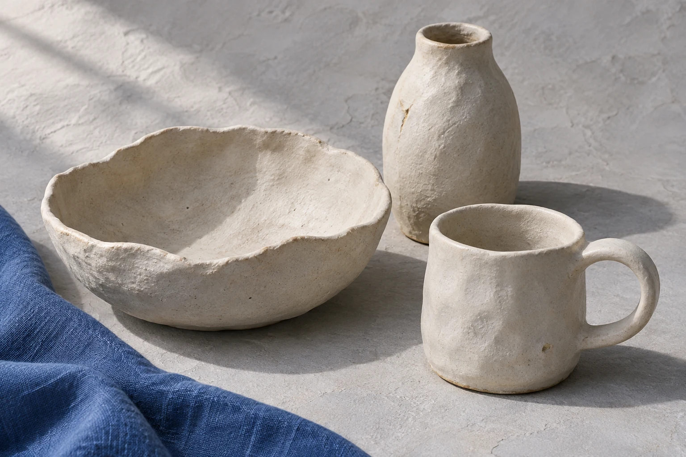

Make a vessel with your hands
A two-hour hand-building session for beginners. You start with a lump of cool clay, shape a simple vessel and choose how its surface will finish.
Beginner session details
What happens in the two hours
Get to know the clay
Press it, roll it, pinch it. Before you make anything, you find out how the clay behaves under your hands.
Form a simple vessel
Build a bowl, cup or small vase by hand, no wheel needed. Simple shapes show the surface best.
Choose a finish
Decide how the surface will look and feel, from smooth to lightly marked by your own fingertips.
£45
for the two-hour beginner session
Coming as a group? A private session can be discussed. No price or dates are fixed yet.